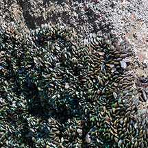
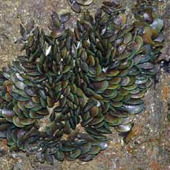
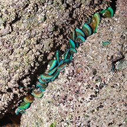
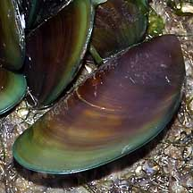
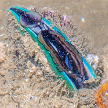
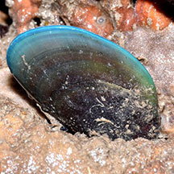

|
|
| bivalves text index | photo index |
| Phylum Mollusca > Class Bivalvia > Family Mytilidae |
| Green
mussel Perna viridis Family Mytilidae updated May 2020
Where seen? This edible clam is sometimes very common on our Northern shores, forming dense clusters on hard surfaces like rocks, pilings, floats. It is well adapted to waters that are murky and sediment laden. Features: 5-8cm. The two-part shell is thin, smooth. Young clams often all bright green, older clams usually brownish edged in green. The animal attaches to hard surfaces with byssus threads, usually in clusters of many individuals. It has a large mobile foot and can 'climb' to another position, e.g., to avoid being buried in sediments. It grows very rapidly, compared to other encrusting animals in its preferred habitat, thus can sometimes take over a location. |
 Growing on a large boulder. Changi, Jan 04 |
 Growing on a large boulder. Changi, Jan 04 |
 Growing in cracks of boulder. Punggol, Jun 12 |
| What does it eat? Like most other bivalves, it is a filter feeder. At high tide, it opens its shell a little. It then generates a current of water through the shell and sieves out the food particles with enlarged gills. When the tide goes out, it clamps up its shells tightly to prevent water loss. |
|
 Chek Jawa, Dec 03 |
 When submerged, filter feeds. Punggol, Jun 12 |
| What eats it? Besides humans, other animals that relish them include fishes, crabs and octopuses. Human uses: Green mussels are considered the economically most important mussel in our region. They are farmed in many parts of Southeast Asia as seafood. They grow fast and in dense numbers. Like other filter-feeding clams, however, mussels may be affected by red tide and other harmful algal blooms. During such times, the mussels concentrate toxins and people who eat them may get seriously ill. Outside its natural range of the Asia-Pacific region, the Green mussel is considered an introduced pest and an unwelcome invasive species. There, unchecked by natural predators, the mussels multiply rapidly and clog industrial pipes, foul aquaculture and disturb local ecosystems. |
| Green mussels on Singapore shores |
On wildsingapore
flickr
|
| Other sightings on Singapore shores |
 Berlayar Creek, Mar 20 Photo shared by Loh Kok Sheng on facebook. |
|
Links
References
|